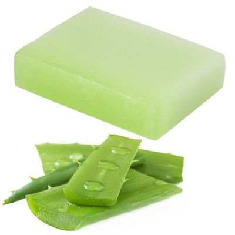
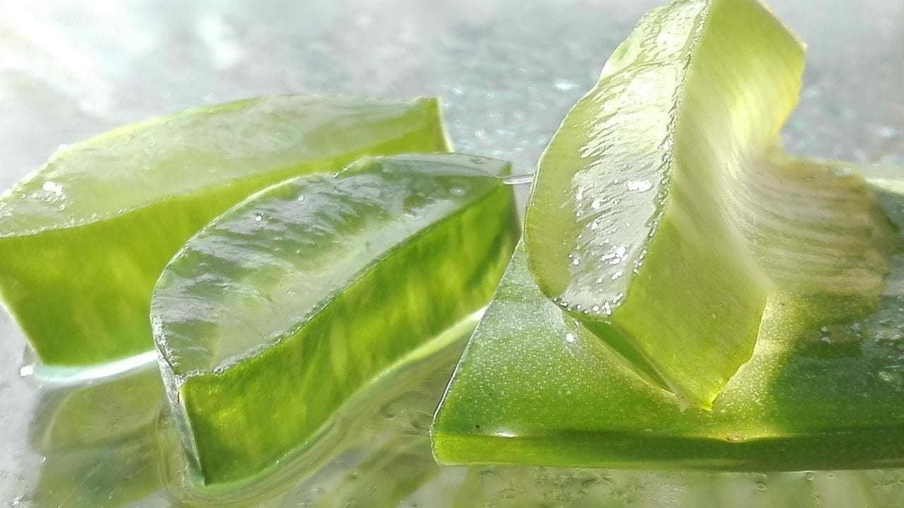
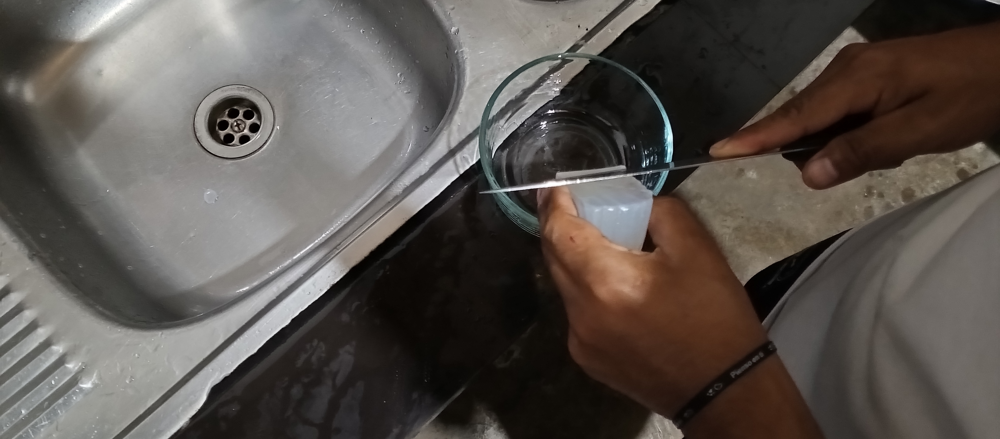
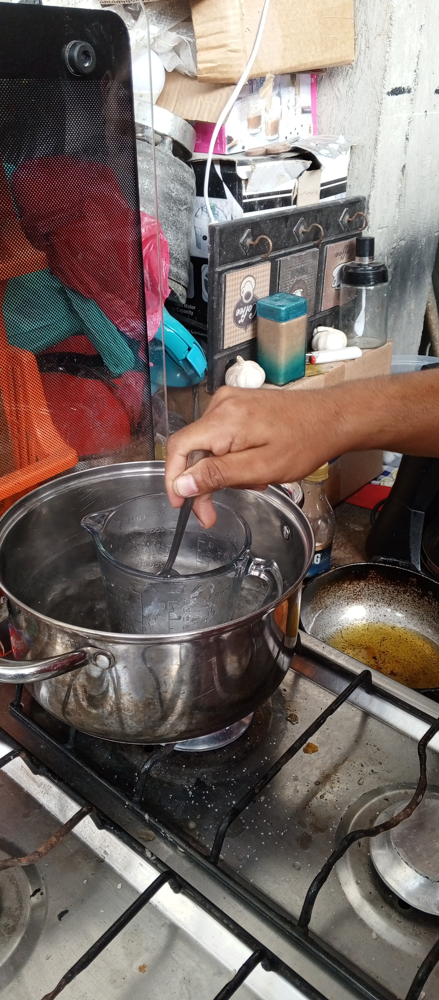
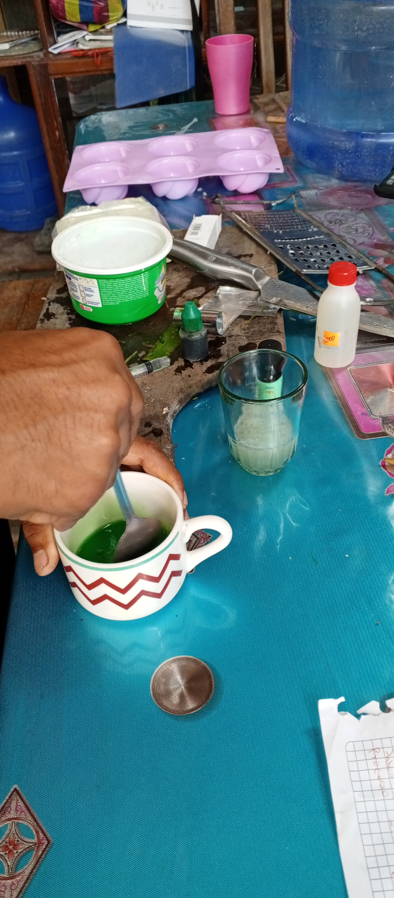

Desventajas del jabon de sábila
Aunque la sábila (aloe vera) tiene varios beneficios para la piel, el jabón de sábila puede causar reacciones alérgicas en algunas personas debido a su composición o fragancias añadidas. Además, el uso excesivo puede resecar la piel. Siempre es recomendable hacer una prueba en una pequeña área de la piel antes de usar un producto nuevo.
- Posibles reacciones alérgicas:Algunas personas pueden experimentar reacciones alérgicas debido a la composición o fragancias añadidas en el jabón de sábila.
- Piel seca:El uso excesivo del jabón de sábila puede provocar sequedad en la piel, especialmente en algunas personas con tipos de piel más sensibles 
- Sábila
- Jabon de glicerina
- Colorante natural
- Aceite de menta
Ingredientes naturales
Propiedades del Jabon de sábila
El jabón de sábiladerivado del aloe vera, es una joya para el cuidado de la piel. Sus propiedades son diversas y beneficiosas. En primer lugar, su capacidad para hidratar la piel es excepcional. El gel de sábila penetra profundamente, dejando la piel suave y flexible. Además, su acción cicatrizante es notable, ayudando a acelerar la curación de pequeñas heridas, quemaduras leves e irritaciones cutáneas.
Otro aspecto es su poder antiinflamatorio y calmante, perfecto para aliviar irritaciones, picazón y enrojecimiento. La sábila también exhibe propiedades antibacterianas y antifúngicas, lo que la convierte en un aliado en la lucha contra el acné y otras afecciones similares. El jabón de sábila actúa como un exfoliante suave, eliminando células muertas y revitalizando la piel. Además, se cree que estimula la regeneración celular, promoviendo una piel más saludable y joven. Sin embargo, es esencial tener precaución, ya que algunas personas pueden ser sensibles a la sábila. Se recomienda realizar una prueba en una pequeña área de la piel antes de su uso extensivo. Para obtener los mejores resultados, es fundamental elegir jabones de sábila elaborados con ingredientes naturales y de alta calidad. Recomendaciones para usar jabón de sábila
- Prueba de sensibilidad: Antes de usar el jabón de sábila en toda tu piel, realiza una pequeña prueba en una pequeña área para asegurarte de que no tengas ninguna reacción alérgica o sensibilidad.
- Limpieza suave: Moja tu piel con agua tibia y aplica el jabón de sábila con movimientos suaves y circulares. Evita frotar demasiado fuerte, especialmente en áreas sensibles.
- Enjuague completo: Asegúrate de enjuagar completamente el jabón de sábila con agua tibia. El residuo de jabón podría causar sequedad o irritación.
- Uso regular pero moderado: Utiliza el jabón de sábila con moderación, ya que su uso excesivo podría secar la piel.
- Hidratación posterior: Después de usar el jabón, aplica una crema hidratante para mantener la piel nutrida y suave, ya que algunos jabones pueden ser un poco desecantes.
- Almacenamiento adecuado: Guarda el jabón en un lugar fresco y seco para preservar sus propiedades durante más tiempo.
Recuerda que cada piel es diferente, por lo que es importante prestar atención a cómo reacciona la tuya al jabón de sábila y ajustar su uso según sea necesario.
PROCESO DEL JABON DE ALOE VERA
Formula
100g de jabon - 100%x - 84%
como calcular el porcentaje de glicerina
Datos
84% de glicerina
100g de jabon
LISTO CON LOS DATOS Y LA FORMULA PROCEDEMOS A CALCULAR
X=84% . 100g/100%
x=84%
Paso 1-
Paso 2-
Paso 3-
Paso 4-


Paso 5-